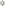

lab in·a box · lab builder
Forms generated live from each component's --schema. Nothing here is hard‑coded.
… components

Forms generated live from each component's --schema. Nothing here is hard‑coded.
Loading…